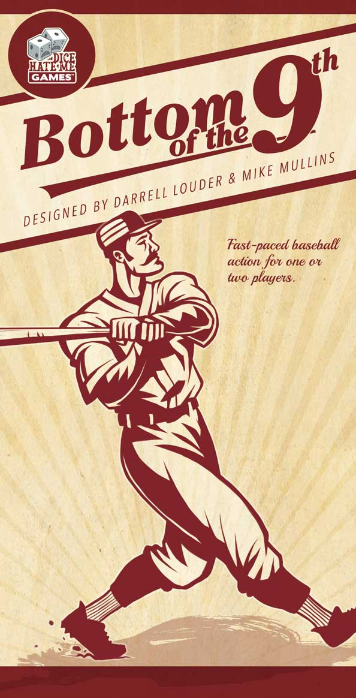
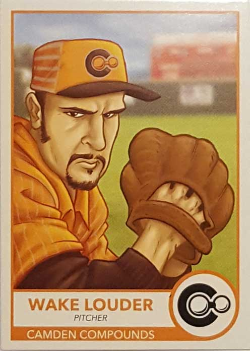
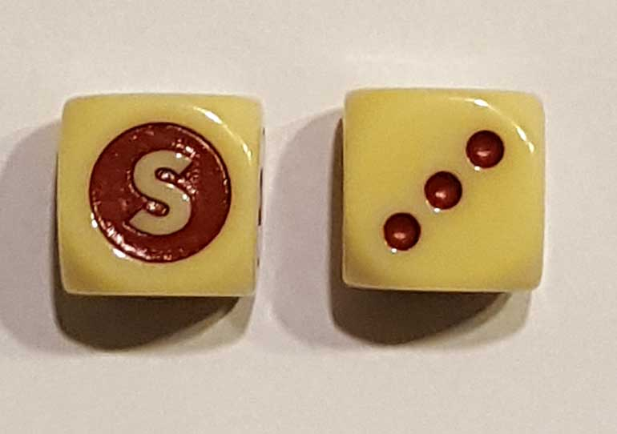
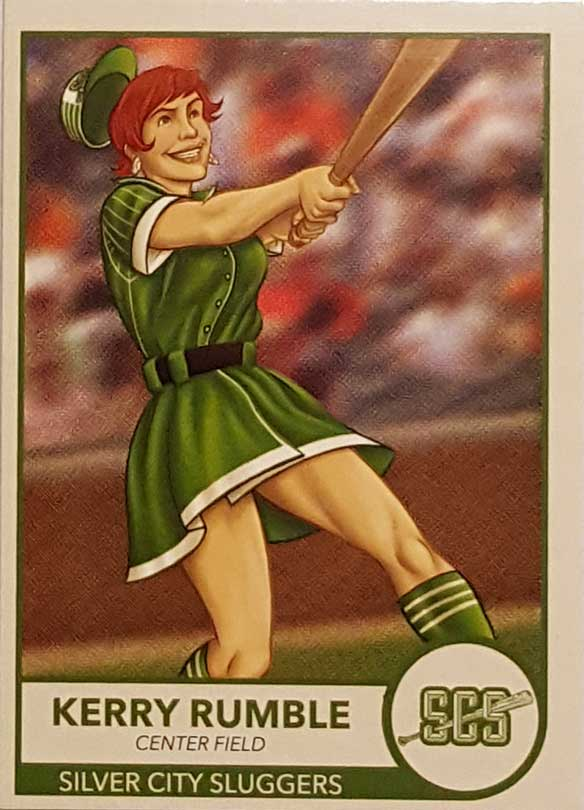
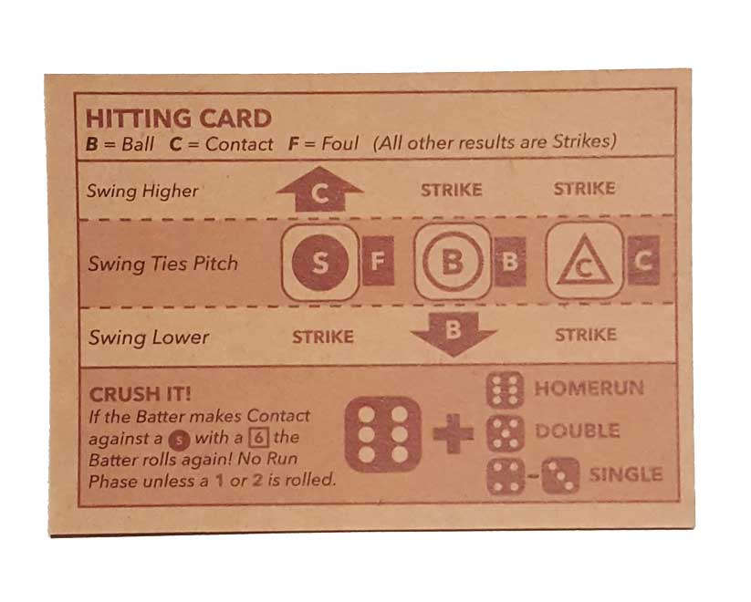
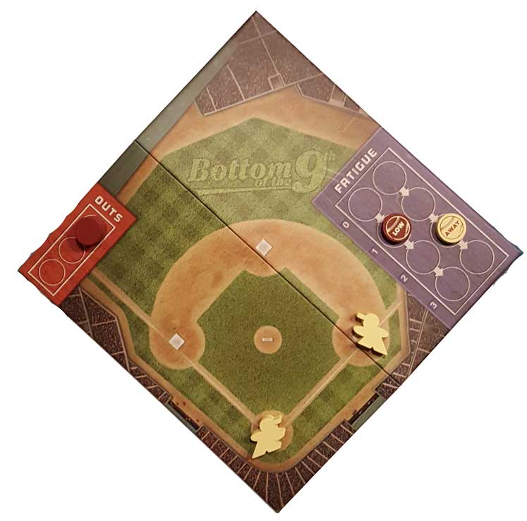
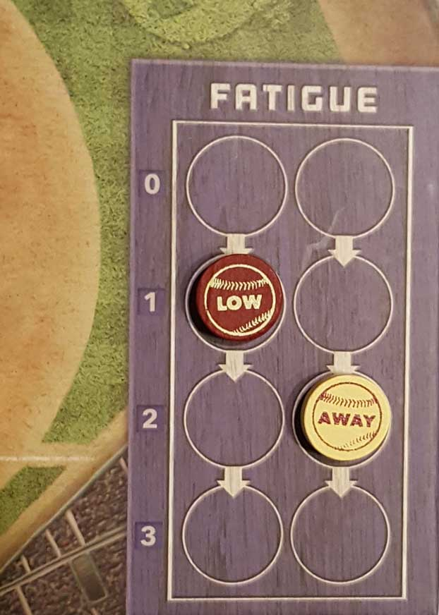
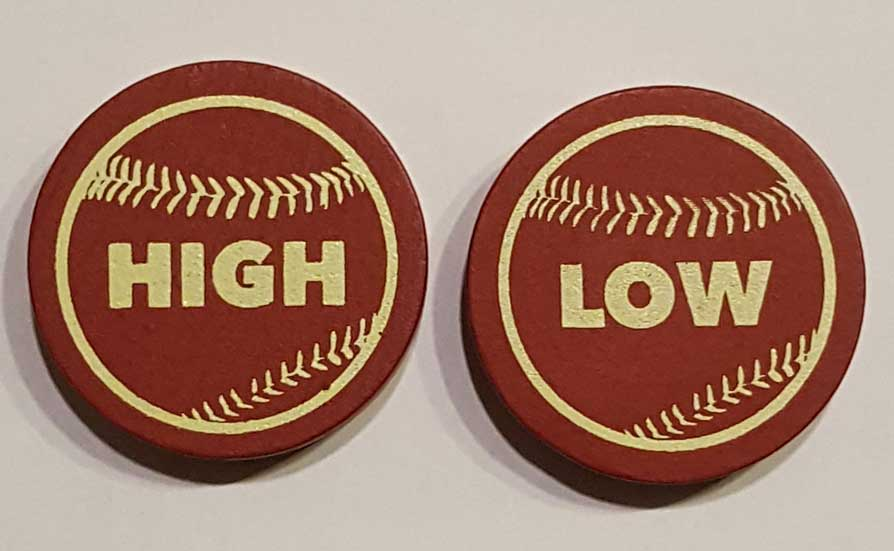
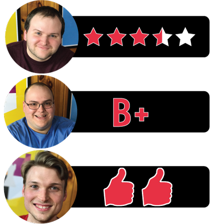

In this Bottom of the 9th review, the Board Crazy crew breaks down the baseball-themed board game that’s designed by Darrell Louder and Mike Mullins, and published by Dice Hate Me Games. In this game, two players assume the roles of opposing teams in the bottom of the ninth inning, and only one run will win it for the home team. For our thoughts on Bottom of the 9th, continue reading below.

D reviews Bottom of the 9th

(Author’s note: this review is meant to accompany our gameplay video and will not go in-depth on the game’s rules. If you’re interested in learning how the game is played, please watch the video. It’s not bad.)
Ooh boy this one is frustrating. First things first: I’m a huge baseball fan. Furthermore, ever since I was a little D, I’ve had this fondness for made-up sports teams and leagues. Some people need the big league licenses to enjoy sports games, but I’ve never had that problem. So upon opening the box for Bottom of the 9th, I was immediately charmed by several details. The little baseball field board and wooden components were a good start, but the cards stole my heart. They come wrapped like a pack of baseball cards, and opening them filled me with that sense of anticipation I used to get whenever I bought a new pack of cards, despite all copies of this game containing (as far as I know) the same players. The cards themselves are cardboard and look and feel like old Topps cards from the 70s and 80s, which is a perfect choice. The players and teams that have been created for the game are fun and filled with personality. My only complaint with the cards is that I wish there were more of them (at least enough to create two full teams), but the expansions should take care of that little issue.
So yeah, first impressions were good, and I didn’t even mention the faux-bubblegum stick that is used for keeping track of balls and strikes. Just perusing the rulebook also made me appreciate the amount of thought that went into the game, which comes with separate rules for solo play and all sorts of suggestions for various different ways to play the game. The rules take some time to wrap your head around, but once you get them, you get them… kind of like real baseball. So far so good, but like I said at the outset, this one is frustrating. I really wish I could say I wholeheartedly love this game, but it has some issues.
Before I lay out those issues, I should mention that I think Bottom of the 9th is a fun game, helped by its snappy pace and shorter playtime. I don’t hate it; I just wish it were better. I assume the designers were really trying to capture the dynamics of the duel between a pitcher and a batter, and I think the “stare-down” phase of each pitch – where the pitcher chooses where he wants to throw it and the batter tries to guess what’s coming – is their most successful game design decision. It’s a bit simplified compared to real baseball, but it comes down to deduction more than luck, which is disappointingly uncommon in this game. Correctly guessing the pitch or fooling the batter is very satisfying, so it’s a shame that it doesn’t pay off more.
The actual result of the pitch isn’t often affected by the stare-down. Fooling the batter or guessing the pitch merely activates certain special abilities of the players, and whether the pitch is going to be a ball, a strike, or put into play almost entirely comes down to dice rolls. Baseball is a game of skill, albeit an extremely difficult one, but in this game it feels like everything comes down to luck. Guessing the pitch location exactly doesn’t make it any more likely for you to hit it, and if the pitch is out of the strike zone, it’s actually impossible (nobody tell Vladimir Guerrero). Even more frustrating are certain situations where the pitcher throws a ball that the batter can’t lay off or a strike that they can’t touch. I’m not saying these things don’t happen in real baseball, but there are also ways to mitigate this issue. There’s no taking a pitch, check swings, choking up, or any number of rules options that could be implemented to mitigate how big of a part luck plays in this game.
The base-running mechanic is kind of a good analogue for the entire game. The pitcher and batter both roll their dice over and over until one of them rolls a five or better. This mechanic has the potential to be tense and fun, and sometimes it can be, but oftentimes it’s kind of underwhelming and has little to do with real baseball. So yeah, Bottom of the 9th is a frustrating game. And you know what? I want to keep playing it. The baseball fan in me definitely finds some of the gameplay choices pretty irritating, but the board game fan in me still appreciates the high production value and quick, lighthearted gameplay. Or maybe it’s just the Mets fan in me who enjoys frustration and disappointment. I don’t know.
D’s Rating: Three and One-Half Stars out of Five.
Will reviews Bottom of the 9th

For most fans of America’s Pastime, the bottom half of the ninth inning is the best part of a ball game. The home team is hitting, the away team is pitching, and the entire game is on the line. Capturing the intensity and unpredictability of such a moment in the form of a board game seems like a difficult, if not impossible, task. However, this game’s designers, Darrell Louder and Mike Mullins, figured out a way to do it. Bottom of the 9th is a wild game of deduction, luck, and occasionally, pure adrenaline.
Among the first things that struck me in regards to Bottom of the 9th was its artwork by Adam P. McIver, the designer of Ex Libris. Similar to that game, the art in Bottom of 9th is eye-catching and humorous. All of the players that you can use, both pitchers and hitters, are drawn in a way that evokes happy memories of going to a ball game as a child. Nearly every baseball stereotype is covered here, from the mustachioed pitcher to the juiced-up slugger. Even female players are included, which is a pleasant surprise. I also adore how the players and their corresponding abilities are depicted in the form of baseball cards. Going through them, I felt like I was fingering through my father’s dusty collection of old Topps cards – it’s all so frickin’ cool! Now, I understand that the art and the emotions they provoke might be lost on someone who’s never cared about baseball or had similar baseball-related memories. And yet, even if you fall into that category, I still think that you’ll find something redeeming about how this game is presented.
Regardless of how thoughtful and genuine the artwork feels, Bottom of the 9th needs to have convincing gameplay or it wouldn’t be worth it. Fortunately, the gameplay here really provokes the same edge-of-your-seat thrills that a real-life bottom of the ninth creates. As the pitcher, picking which area of the strike zone to throw to is intense, considering that the hitter knows where you’d like to throw it. When the hitter guesses incorrectly and you earn an advantage, it feels so uplifting. Conversely, when the hitter guesses correctly and clobbers the ball, it’s downright devastating. Surprisingly, there’s a lot of deduction that goes on here, especially for the hitter. Analyzing the pitcher’s body language, in addition to how many “ace” pitch locations they have remaining, requires skill and is definitely fun. Just like in real baseball, every at bat is a battle between the pitcher and hitter – this is very savvy game design.
Once the pitcher and hitter select their pitch and swing locations, dice need to be rolled. For the pitcher, two dice are rolled to determine if a ball or strike is thrown, as well as how good that ball or strike is. The hitter counters with their own roll to determine whether or not they make contact, take a strike, or take a ball. Now I must admit, figuring out the outcome of a pitch and swing is a lot more complicated than it should be. There’s a table in the rulebook (and on a card) that you’ll have to refer to in order to find out if there was a hit or not, and constantly checking this table quickly becomes tedious. Also, whenever we’ve played, there haven’t been as many hits as we would’ve liked. Since it all comes down to a dice roll, sometimes luck (or bad luck) can take over a session of Bottom of the 9th in a detrimental way. Choosing pitch and swing locations ahead of time help mitigate the luck a bit, but still, it’s way too present here sometimes, and that’s a shame.
However, when someone finally makes contact, the adrenaline really starts pumping. At that point, the pitcher and the hitter both pick up their D6s and roll until one of them gets a five or a six. If the hitter rolls a five or six first, then the runner is safe, but if it’s the other way around, the base runner is out. These rolls are so entertaining and rush-inducing that it’s hard to describe in text. And don’t worry, the hitter has an opportunity to crush the baseball and avoid the base-running dice rolls altogether, which is a shrewd caveat to the gameplay.
Once the pitcher gets three outs, they win that game of Bottom of the 9th, but if the hitter drives in a run, they win instead. Sadly, sessions of this game don’t last that long, but the designers came up with several variants, including ones that allow you to play more than one inning. In fact, the people involved in making this game basically covered everything there is to cover when it comes to baseball and the bottom of the ninth inning. I’m very impressed by this game’s attention to detail in regards to the artwork and gameplay, the latter of which is truly exhilarating sometimes. Sure, Bottom of the 9th is not without its flaws – there’s too much luck involved with some of the gameplay, and it probably shouldn’t be as easy as it is for the pitcher to exhaust their favorite pitch locations. And while some of the flaws I did notice usually bother me more with other games, I didn’t care about them as much here. This is probably because I love baseball, and therefore, I was predisposed to enjoying this game. Then again, you don’t need to love America’s Pastime in order to appreciate Bottom of 9th – it’s just that good.
I give Bottom of the 9th a: B+
Graham reviews Bottom of the 9th

As you might’ve noticed from our video playthrough of Bottom of the 9th, I didn’t actually get a chance to play it. With that in mind, I decided that my review will be more of an overview of the observations I made about the game, and what elements of it intrigued me the most.
The first thing that stood out to me was the deception element of this game. In Bottom of the 9th, there are two players – one person plays the batters and the other the pitchers. On each turn, the pitcher is trying to get the batter to make a bad swing, while the batter is trying to predict where the pitcher is going to throw the baseball (i.e low and outside, low and inside, etc.). If the batter guesses correctly, then they earn some advantages on the swing, and if the guess incorrectly, then the pitcher gets some advantages on the pitch. At first, this portion of the game seems like luck, but you’ll notice that it becomes much more than luck. See, the pitcher can get fatigued by throwing certain pitches, so they have to be careful or they’ll get to a point where they’re only allowed to throw one type of pitch. In that case, the batter will always be able to guess which pitch will be thrown, so the pitcher needs to try and find a nice balance between each type of pitch. Meanwhile, the batter needs to try and bait the pitcher into throwing pitches that will fatigue them. All of this becomes a really interesting dynamic, and it’s one of the main things that draws me to this game.
Another thing that I found pretty interesting about Bottom of the 9th is that even though it seems simple, there’s quite a bit to it. Personally, I really enjoyed that because I think it’s such a great analog to the actual game of baseball. In Bottom of the 9th, you have to often reference the rulebook to see what rules apply to certain scenarios. Now, since I didn’t get a chance to play, I can’t tell if referencing the rulebook got frustrating after a while. But from the looks of it, it seemed like it wasn’t too overwhelming. I know some games can go a little overboard with having to reference the rulebook, but my feeling is that the rules are pretty clearly outlined and easy to understand.
The last thing that intrigued me about Bottom of the 9th is that it features sets of rules for different length games. In a standard game, you only play the last half inning, hence the name “Bottom of the 9th”. Fortunately, they provided rules in case you want to play a few innings or even more than that. To me, that’s awesome because it gives the player a lot of variety in how they can play, and it adds an extra level of replayability to the proceedings.
Although I didn’t get a chance to play this game yet, I think I got a pretty good feeling for it from watching my colleagues play. Bottom of the 9th seems like a ton of fun, and I can’t wait to try it out. As of now, I give Bottom of the 9th two thumbs up.
Bottom of the 9th Review – Board Crazy’s Ratings 
Leave a Reply
You must be logged in to post a comment.